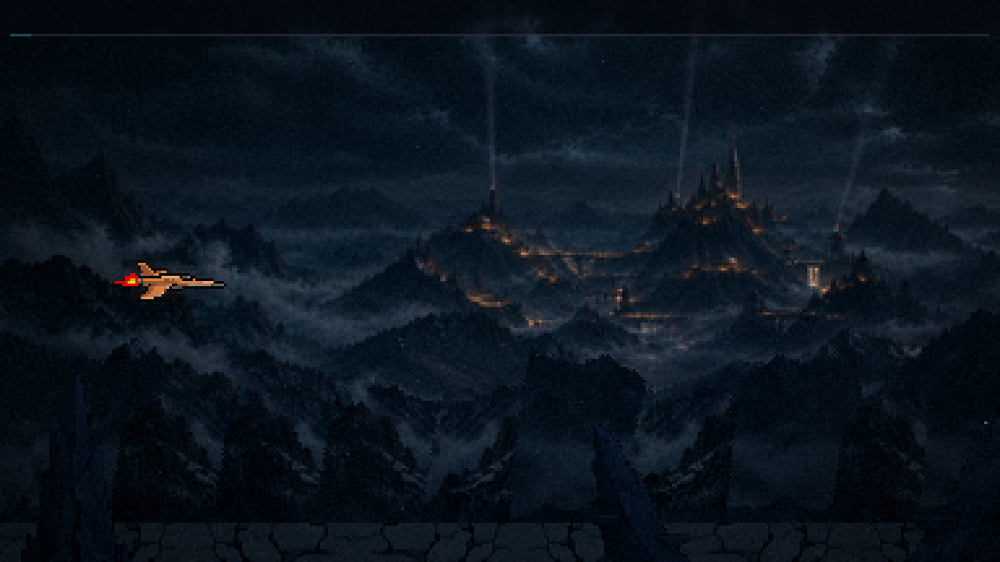
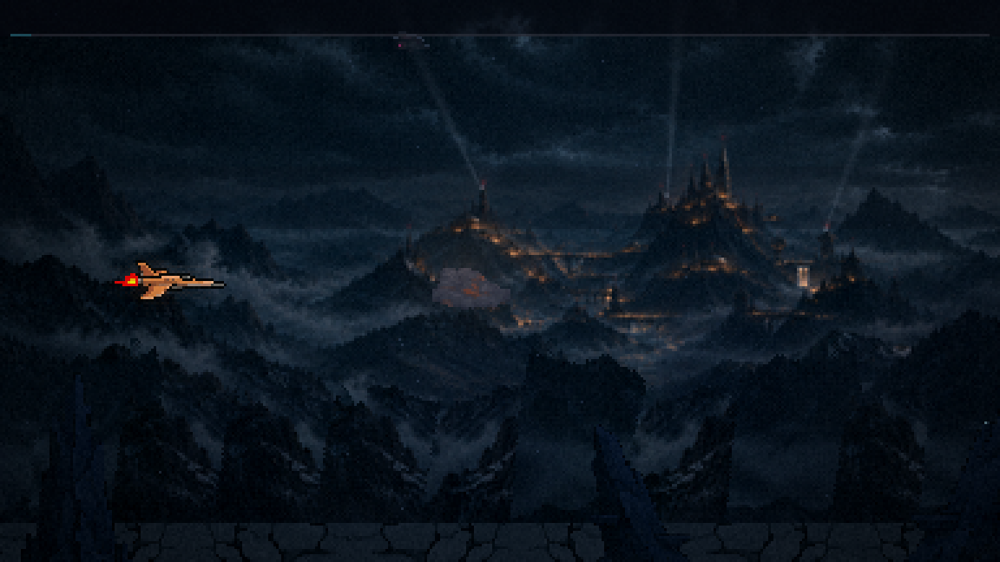
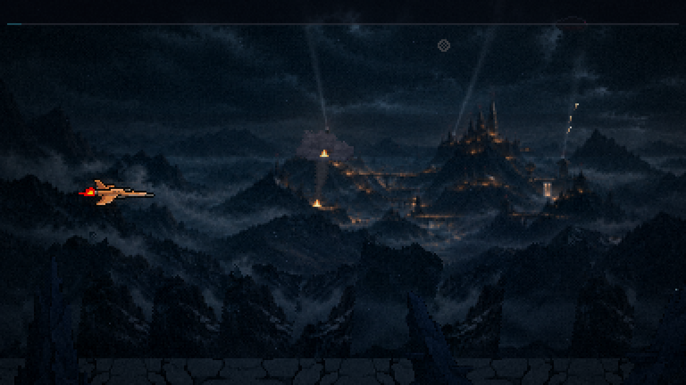
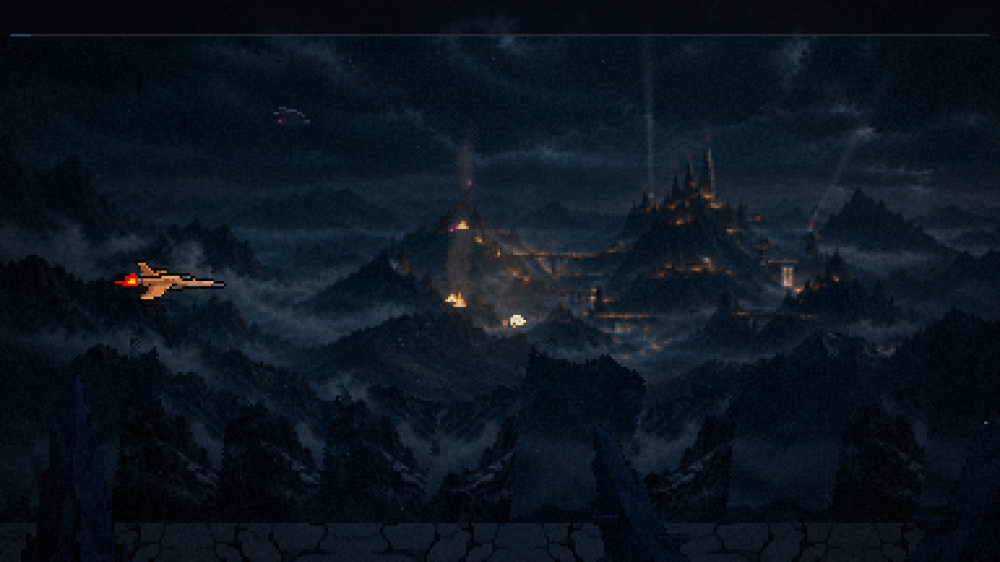
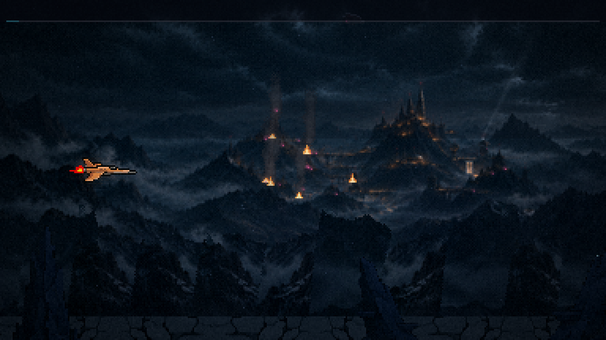
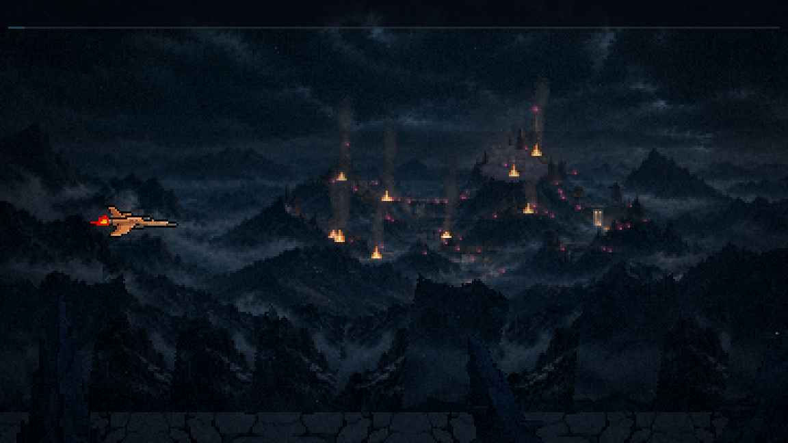
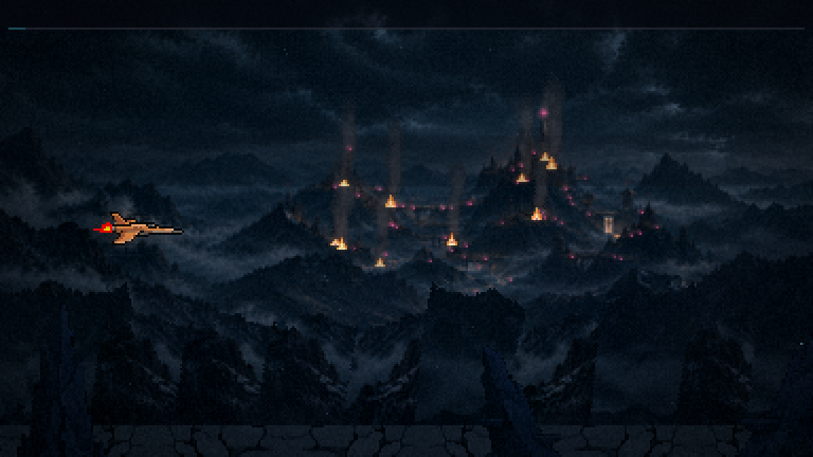
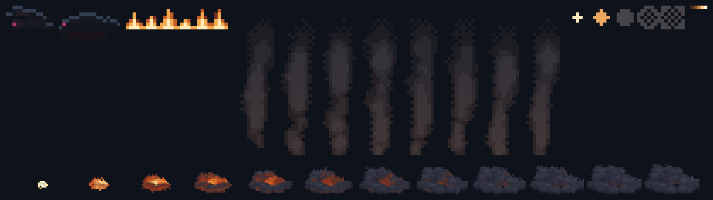

Fase 1 · rodada 2 · a invasão
20/10/2026 · ← rodada 1 · Feita com você fora. A colônia cai na sua frente, pela luz: as janelas apagam de fora para dentro, o magenta acende onde o âmbar morreu, a defesa luta e cai, as naves invasoras descem, as explosões ao longe deixam fogo e fumaça, e a ponta da cidadela fica magenta logo antes do chefão. Tudo só cenário: nada tem corpo nem dá dano. As peças do chão e o primeiro plano ainda são os antigos (rodada 3).
A fase, em velocidade real
Instante a instante







O tempo da invasão
| 0–12 s | A colônia inteira acesa, os faróis piscando. Três holofotes varrendo as nuvens; rajadas de traçantes subindo de três pontos, algumas acabando num estouro de flak. |
| 13 s | A primeira nave invasora desce das nuvens (cinco no total, a última aos 41 s). Elas somem na névoa ao pousar. |
| 14 s | A primeira explosão ao longe, com o clarão nas nuvens (dez no total, uma a cada 4,5 a 5,5 s, até os 59,5 s). Cada uma deixa um fogo e, logo depois, uma coluna de fumaça. |
| 16–58 s | As janelas apagam de fora para dentro (a cidadela por último), cada uma com uma falha antes. Uma a cada quatro ganha um magenta pulsando. |
| 26 · 36 · 44 s | Os holofotes apagam, um por vez; a artilharia para junto. |
| 55 s | A ponta da cidadela fica magenta: a defesa foi tomada. |
| 63 s em diante | Nada novo. Ficam o fogo, a fumaça e o magenta, quietos, para não competir com o chefão. |
As peças, assadas em pixel

O que mudou do desenho
- As naves somem na névoa, em vez de passar por trás das colinas. Tentei recortar o cume das colinas contra as nuvens, mas nesta pintura os dois diferem por poucos tons, e o recorte saía em pontos soltos. Se você quiser a passagem por trás, a máscara precisa ser recortada à mão, como você fez com a do menu.
O que você decide
- O magenta: a quantidade (hoje uma a cada quatro janelas mortas) e a força.
- Os holofotes e os traçantes: mais fortes, mais fracos ou como estão.
- As naves: somem na névoa (como está) ou passam por trás das colinas (você recorta a máscara).
- O ritmo: se a colônia cai rápido ou devagar demais.